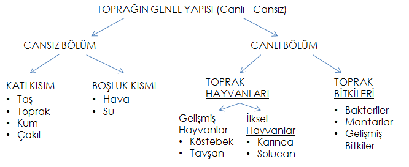
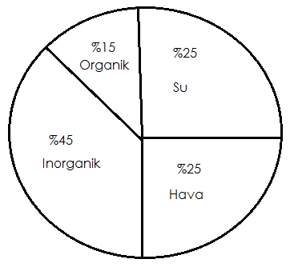
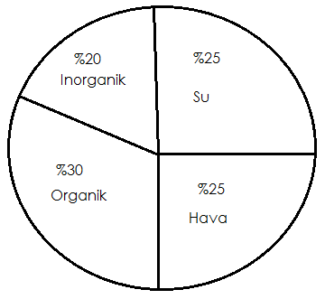
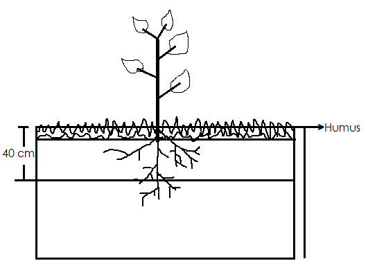
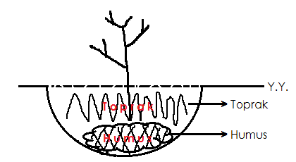
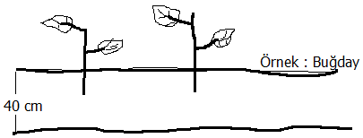
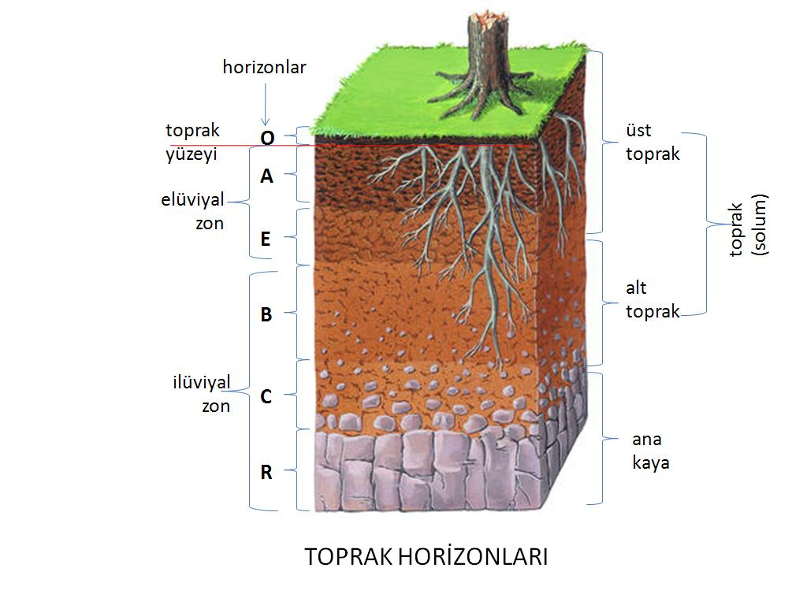
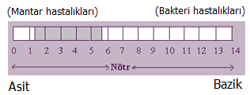
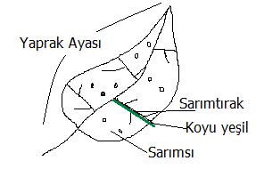

Kayaların ve organik maddelerin türlü çaptaki ayrışma ürünlerinden meydana gelen, içerisinde geniş bir canlılar alemi barındıran, bitkilere durak ve besin kaynağı görevi gören bir maddedir.
Toprağın genel yapısı:
Karşılaştırmalı özellikleri:
| Özellikler | Kum | Balçık | Kil |
|---|---|---|---|
| Süzeklik | Aşırı | Orta | Kötü |
| Sıkılık | Gevşek | Orta | Pek sıkı |
| Faydalanabilir su kapasitesi | Düşük | Yüksek | Orta |
| Su tutma gücü | Düşük | Orta | Yüksek |
| Durgun su oluşumu | Yok | Yok | Var |
| Havalanma | İyi | Orta | Kötü |
| Isınma | Erken | Orta | Geç |
| İşlenebilirlik | Kolay | Orta | Zoe |
| Besin maddesince | Fakir | Zengin | Orta |
| Yıkanma hızı | Hızlı | Orta | Yavaş |
| Kimyasal gübre etkisi | Hızla geçici | Orta sürede kalıcı | Uzun sürede kalıcı |
Üç tip su var.
Toprak parçacıkları tarafından iç ve dış yüzeylerde çok sıkı bir şekilde tutulan sudur. Enerji birimi ile ifade edilecek olursa 50 atmosferden daha büyük bir kuvvetle tutulan sudur. Bitkiler en çok 15 atmosfer kadar kök emme basıncına sahip olduklarından higroskopik sudan faydalanamazlar. Bu nedenle higroskopik suya ölü su adı verilir.
Serbest direnaj koşulları altında, yerçekiminin etkisi ile toprak boşluklarında tutulamayıp kapilar olmayan boşluklardan geçerek aşağıya doğru hareket eden sudur.
Toprak boşluklar sisteminde tutulan, organizmalar için yaşamsal olan yarayışlı sudur.
Cansız Bölüme Zararları
Toprağın su ile dolu olmayan gözeneklerinin tamamına yakınında hava bulunmaktadır. Yoğun sulamanın ardından hava önemli ölçüde azalır.
Canlı Bölüme Zararları
Havanın az suyun fazla olduğu topraklarda bakteri ve mantarlar, dolayısı ile hastalık etmenleri çoğalır.
Mineral Toprak
İnorganiklere örnek kayatuzu, kum verilebilir.
Organik Toprak
Organik maddeler, bitkisel ve hayvansal kalıntılardan meydana gelmiştir. En önemli özelliği dinamik olmasıdır (sürekli çalışan). Toprağa esmer rengini verir (Siyaha yakın ise organik maddelerce zengin). Toprak organik maddesinin esas kısmını humus oluşturur. Humus oldukça dayanıklı, kahverengi olup bitkisel ve hayvansal kalıntılardan meydana gelmiştir.
Tarım il ve ilçe müdürlüklerinden toprak testleri ile arazideki toprak cinsi öğrenilebilir.
Fidan dikilecek çukura önce en alta humus konulup sonra üstüne topral eklenirse daha iyi olur.
Toprağın Oluşum Zamanı/Süresi
1 cm toprak => 200 ile 1000 yıl arasında oluşur. Ortalama 500 yıl alınırsa 40 cm toprak 20.000 yılda oluşur.
(KAYA) + (İKLİM KOŞULLARI) + (ZAMAN) + (TOPOĞRAFYA) + (CANLILAR) = TOPRAK
Katmanlar:
Toprak uygun miktarda yağmur veya sulama suyunun girmesine izin verecek oranda gözenekli olmalıdır.
Nemi bitki köklerinin gereksinimini karşılayacak oranda tutmalıdır. Fazla tutması bitki gelişimini olumsuz etkiler.
Besin maddesince zengin : Killi toprak
Bitki için besin maddesince zengin : Balçık toprak
{Ne kadar kireç var ne kadar organik, Toprak tansiyonu da denilebilir}
Toprağın asitlik, bazlık (kireç) durumunu ifade eder. pH değeri toprakta genellikle 4-10 (pH) aralığında yer alır. Bu değerin 7’nin altında olması halinde asit, üzerinde olması halinde ise baziklikten söz edilir. Çoğu bitki için 6-7 arası optimum gelişme aralığıdır.
pH : 5-6 mantar oluşur
pH : 7-8 bakteri oluşur
pH’ın önemi
1.Toprak reaksiyonu (pH) bitki besin elementlerinin elverişliğini ve bitkiler tarafından alımını etkiler. pH, 6-7 aralığında iken hemen hemen tüm besin elementlerinin elverişliliği en yüksektir.
2.Toprak reaksiyonu (pH) asit veya baz (alkalin, pH>11) koşullara kaydıkça bazı elementlerin çözünürlüğü azalırken bazılarının toksik düzeyde artması söz konusu olabilir.
3.Topraktaki mikrobiyal aktivite de toprak pH’ına bağlı olarak değişir. Genel bir kural olarak asit koşullarda mantarlar, baz koşullarda bakteriler etkilidir.
Makro besin elementleri (En çok yarayışlı)
Mikro besin maddeleri
Demir -> pH yükseldikçe kitliyor
Bakır
Kalsiyum
Manganez
Kükürt
Mangan
Bor -> pH Yükseldikçe kitliyor
Çinko
Molibden
pH yükseldikçe özellikle Demir ve Bor’u kilitliyor ve bitkinin almasına engel oluyor (Kireçli).
Yaprak damarları koyu yeşil iken, yaprak ayasında renk açılmaları görülür. Damarlar yeşil iken damar araları sarı renk olarak görülür.
Genelde kireçli topraklarda ve çok fazla yıkanan topraklarda görülür.
Kireç demir elementini bitkinin almasını engelleyecek şekilde bağlar.
Kloroz (demir eksikliği) toprakta demir elementinin olmaması veya bitki tarafından alınmayacak formda olması sonucunda meydana gelir.
Çözüm
Toprağın pH’ını ölçmek (örneğin 7-8 pH) ve uygun aralığa (6-7) çekip beklemek lazım. Düzelme yoksa demir ilavesi yapmak gerekir.
(%60’ında çıkar).
Bor noksanlığı en yaygın beslenme bozukluğudur. Bor eksikliğinde büyüme sorunları yaşanır. Bunlar:
1. Bitki formunda eğilmeler
2. Tepe tomurcuğunun büyümesinde gerileme
3. Boğum aralarının kısalması
4. Çalılaşma-bodurlaşma
5. Tomurcuk, çiçek ve tohum oluşumunda azalma
6. Meyve iç kısmında boşluklar, çürümeler
7. Meyve tutumunda azalma
Önemli NOT:
1. Yüksek pH’da yetişecek bitki seçmek.
2. Organik metodla pH’I düşürmek
Örneğin:
Ekliyerek pH 1 birim düşürülebilir.
3. Kimyasal metodla düşürülmesi
Asiditeyi arttırıcı gübre -> Amonyum sülfat
4. Asitli toprak sermek.
1. Ortanca
2. İğde
3. Taflan
4. Dişbudak
5. Çin Mabed Ağacı - Ginko Blaba
(Alternatif tıpta hafıza kaybına karşı kullanılmaktadır.)6. Lale Ağacı
7. Hanımeli
8. Zakkum
9. Çınar
10. Ihlamır
11. Meşe
12. Üzüm asması
Bu topraklarda istemedn yetişen bitki belli sinyaller verir. Bitki büyüme sorunları yaşar. Bitkinin alt kısımları normal kalsa da diğer kısımlarında (Örneğin tepe kısmı) sararma ve deformasyonlar görülür.
Sararmaya neden olabilecek etmenler:
1. Yanlış pH
2. Bir zaralı
3. Hastalık
4. Havasızlık
Gül yetiştirilecek ise istediği pH 6.0 - 6.5, nötre yakın hafif asitte yetişir.
Kireç materyalleri kullanılarak yükseltilir.
Örnek: Kalsiyum karbonat, magnezyum karbonat, kalsiyum oksit, kireç.
1. Açelya
2. Palmiye
3. Orman gülü (Karadeniz’de yetişir. Orman balı, deli bal olur.)
4. Çan çiçeği (çok dekoratif, güzel bir bitki)
5. Gardenya (güzel bir bitki)
6. İlex (çoban püskülü) (yaprak dökmez, dikenli)
7. Kamelya
8. Funda
Bahçe toprağı
Sterilize edilmelidir.
Tüf
Volkanik kayaçlardan elde edilir, hafiftir. Su tutma özelliği iyidir. Sterildir.
Ponza
Volkanik bir kayaç türüdür. İyi su tutar.
Torf
Göl yataklarındaki su seviyesinin düşmesi ile bitkilerin gelişmesi, su seviyesinin yükselmesi ile bitkilerin ölümü ve bu doğa olayının sürekli tekrarlanması ile bitki kök ve gövdelerinin yüzlerce yıl süren dönüşümü, birikimleri sonucunda oluşan organik toprak türüdür. Torfun özellikleri:
Perlit
Volkanik kökenli, steril bir maddedir. Yetiştiricilik için idealdir. Havalanması çok iyidir. Direnajı çok iyidir. Besin maddesi oranı sıfırdır.
Kum-Çakıl-Dere mili
Seyreltmek için kullanılır.
NOT: Perlit tek başına, diğerleri karıştırılarak kullanılabilir.
NOT: Domateste sıcaklık pH’tan daha önemli
Amaç: Topraktaki mikropları kırmak
Dezenfeksiyon: her türlü hastalık etmeni ve zararlıların istenmeyen sonuçlarını yok etmek için toprağın çeşitli yollarla ısıtılması veya ilaçlanması işlemidir.
İki şekilde yapılır:
1. Kimyasal dezenfeksiyon (BİO-SİT-> yosun öldürücü, hepsini öldürür).
2. Fiziksel dezenfeksiyon
Bu yöntemde çeşitli BİO-SİT’ler dezenfektan olarak kullanılmaktadır.
BİO-SİT : Bakteri, mantar, yosun, yabani bitki tohumları dahil hepsini öldürüyor. Sonradan besin maddesince zenginleştirmek gerekir. Mikrobiyal gübre ile aşılamak lazım.
Nasıl yapılır?
1. Dezenfaktan öncesi toprak işlenmiş olmalıdır (yetiştireceğimiz bitkiye göre işlenme derinliği değişebilir).
2. Uygulamadan sonra toprağın üzeri plastik örtülerle örtülmeli, bu örtü 2 ile 10 gün aralığında bekletilmelidir.
Buhar ile toprak dezenfeksiyonu
Toprağın içerisine yerleştirilen buhar boruları ile veya buhar makinesi yardımı ile yapılan dezenfeksiyon işlemidir.
Güneş enerjisi ile toprak dezenfeksiyonu (solarizasyon)
Polietilen örtü kullanılarak sıcaklığın en yüksek olduğu aylarda toprağın belli sürelerde örtülmesi işlemidir.
Nasıl yapılır?
1. Uygulama yapılacak alan uygun derinlikte işlenmiş ve tesfiyesi yapılmış olmalıdır.
2. Örtü kaldığı sürece toprağın nemli kalması sağlanmalıdır.
3. Toprak üzeri örtüldükten 3-4 gün sonra maximum sıcaklığa ulaşır. 4-6 hafta arasında uygulamaya devam edilmelidir.
NOT: Sterilizasyon ve solarizasyondan sonra topraktaki herşey ölür. Mutlaka bu işlemden sonra gübreleme veya aşılama (mikrobiyal gübre) ile toprağa faydalı bakteri vs ilave etmek gerekir. Toprak havalandırılmış olmalı ve çimlendirme testi yapılmalı. Tere 2 gün içerisinde 20 oC de çimlenir (veya maydanoz). Toprağın değişik bölgelerinde bu yapılır. Çimlenmiyorsa kimyasal etkisi gitmemiş demektir.
Dezenfeksiyon sonrası işlemleri
1. Havalandırma: Örtü toplanır. Eğer kimyasal bir dezenfeksiyon yapılmış ise maddenin kokusu geçene kadar toprak havalandırılmalı (çapalanmalıdır).
2. Çimlendirme testi: Aldığımız toprak örneğinde (veya alanda) 20 oC’de 2 gün içerisinde çimlenmesi gereken Tere tohumları ile çimlendirme testi yapılır. Eğer tohumlar çimlenmiyorsa dezenfektan etkisi geçmemiş demektir.
Toprak yüzeyinde ve bitkinin kök bölgesinde bulunan fazla suyun kontrollü olarak uzaklaştırılmasına direnaj denir.
Açık direnaj
Bu sistemde suyun tahliye edileceği kanallar açık olarak inşa edilir. %2-%4 eğim gerektirir.
Olumsuz özellikleri:
1. Arazi kaybına neden olur
2. Kanalların sık yapıldığı durumlarda toprak işleme makinelerinin kullanımı zorlaşır.
3. Su kanallarında oluşan yabancı otlar sürekli kontrol altında tutulmalıdır.
Olumlu özellikleri:
1. Maliyeti ucuzdur
2. Kolay kontrol edilir
3. Sulama kanalı olarak kullanılabilir
Kapalı direnaj
Kapalı borular yardımı ile fazla suyun toprak altından tahliye edilmesidir. Direnajın tesis derinliği yetiştirilecek bitkiye göre değişmekle birlikte 50 cm – 2 m aralığında değişim gösterir.
Olumlu özellikleri:
1. Arazi kaybına neden olmaz
2. Toptak işleme aletlerinin calışmasını etkilemez
Olumsuz özellikleri
1. Kurulum maliyeti ve tamir giderleri açık direnaja oranla masraflıdır
2. Tıkanan kanalların kontrolü zordur